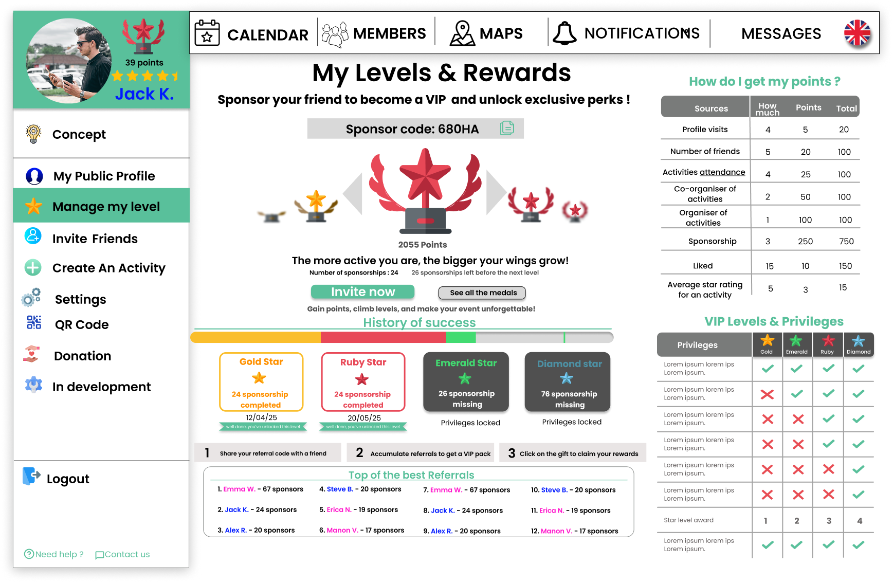

Pages Web / Mobile Socializus
Développement Web & Designer des nouvelles pages web de maniere responsive et mobile, sécurisée pour la modération des utilisateurs et le pilotage des données en temps réel.


Rôle
Dév Fullstack • Web / Designer
Contexte
Stage 2 mois — ARTEM 5
Objectifs
Modernisation • UX • Sécurité
Stack
React • MongoDB • Docker
🧠 Accroche / Résumé
Pendant mon stage chez ARTEM 5, j’ai développé des pages web et mobile responsive pour l’application Socializus. L’interface permet la modération (activation / bannissement ) et le pilotage des données avec une logique de gestion robuste. Le tout en restant aligné sur des exigences de sécurité et d’UX.
🛠️ Stack technique utilisée
- Front-End : HTML5, CSS3 (Flexbox & Grid), JavaScript
- Back-End : NestJS (Node.js)
- Base de données & Infra : MongoDB Compass, Docker
- Design & Outils : Figma (extraction de styles), GitHub Desktop
🚀 Mes réalisations majeures
- Simulateur web de test (Semaine -1) : émulation sous Android Studio pour valider des algorithmes de décompte et de sélection dynamique en JavaScript.
- Conteneurisation de l’environnement (Docker & MongoDB) : isolation complète de la base locale afin de reproduire fidèlement l’environnement de production.
- UI 100% responsive : intégration des maquettes Figma en CSS pur avec Media Queries pour un rendu optimal sur PC et mobile.
- Developpement des pages : développement des pages web et mobile avec React, en respectant les exigences de sécurité et d’expérience utilisateur.
💡 Ce que ce stage m’a apporté (Soft Skills & méthodologie)
- Téléprésentiel synchrone : collaboration continue via Google Meet, nécessitant une communication rigoureuse et une forte autonomie.
- Développement assisté par IA générative : utilisation d’assistants de code pour accélérer l’implémentation de fonctionnalités complexes.
- Sécurité, UX et données dès le départ : raisonnement sécurité/UX/base de données dès la conception de la console.
📚 Veille Concurentielle
Pendant le stage, j’ai préparé une veille concurentielle sur les bonnes pratiques de sécurité et de modération pour les plateformes collaboratives et mles tecnologies ou les outils que les concurents avaient en plus de nous . Exemple de concurent : Meetup , Knockk.
- Thème principal : Veille concurrentielle sur les bonnes pratiques de sécurité et de modération des plateformes collaboratives, incluant l'analyse des technologies et outils que les concurrents utilisent en plus de notre stack. .
- Objectif : Ajout de la dimension concurrentielle (comparaison avec Meetup, Knockk) en plus de la sécurité/modération.
- Cahier des charges :Recenser les technologies et outils que les concurrents ont en plus de nous, analyser le support des rôles (gestion des permissions / autorisations).
- Résultat : sRecommandations techniques issues de l'analyse, présentation orale devant l'équipe.
- Avance : À enrichir par : des cas d'usage, des benchmarks, les tendances 2026.
🔍 Avancement de la veille technologique
Cette veille est déjà organisée en plusieurs axes :
- Analyse : comparaison des frameworks Node.js, des bases NoSQL et des pratiques de sécurité applicative.
- Focus tendance : déploiement conteneurisé, CI/CD, monitoring et observabilité des applications web.
- Évolution : formulation de pistes d'amélioration pour Socializus, comme l'ajout de logs d'audit et de tableaux de bord d'alerte.
🔗 Accès à la veille
Consultez le document de veille technologique détaillé et le cahier des charges associé pour approfondir les choix techniques et les recommandations.
Voir la veille technologiqueCode Source & Documentation
Le depot Github associé à ce projet est en prive. Il sera partagé avec les recruteurs et les personnes intéressées sur demande.